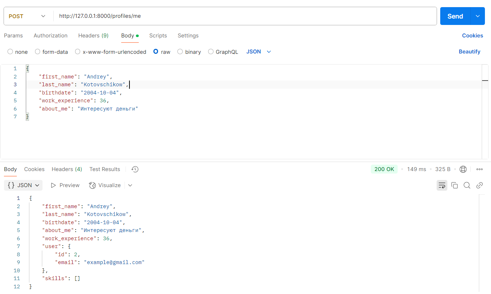
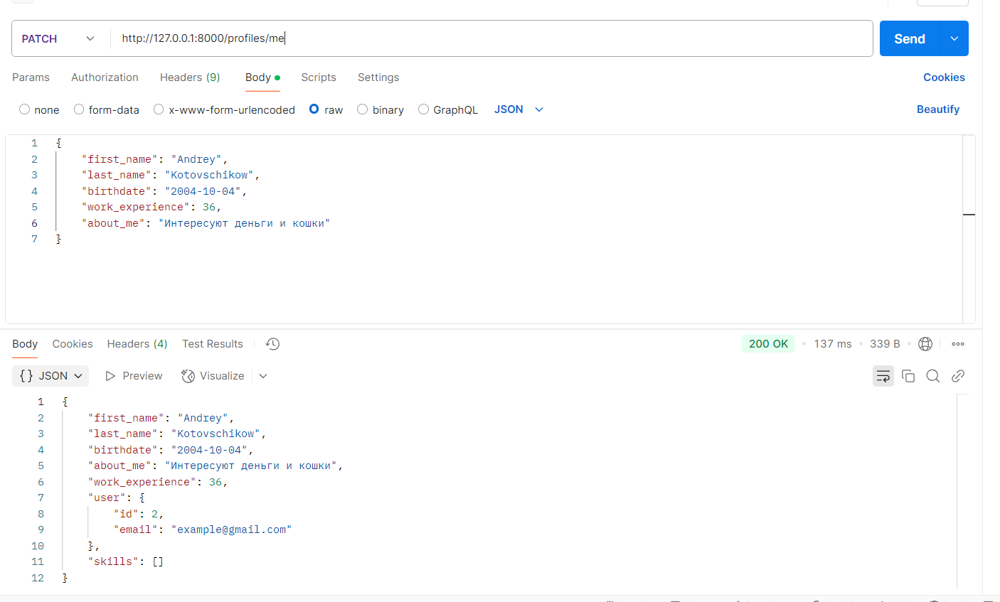
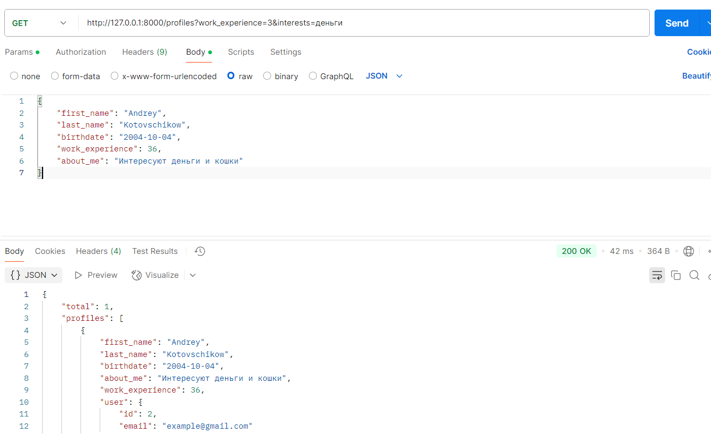
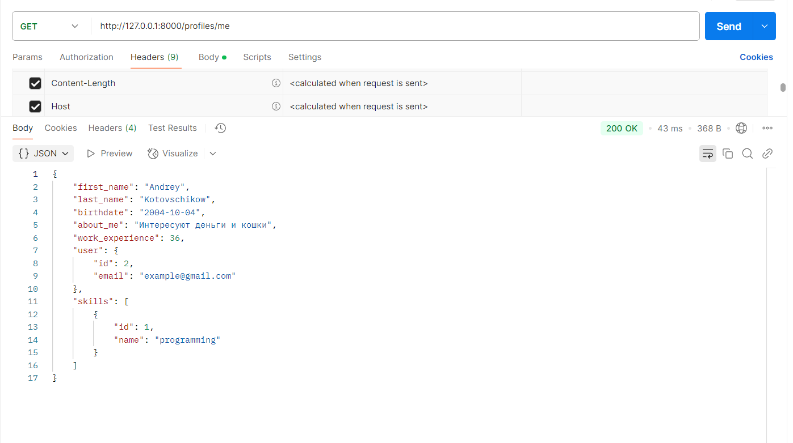
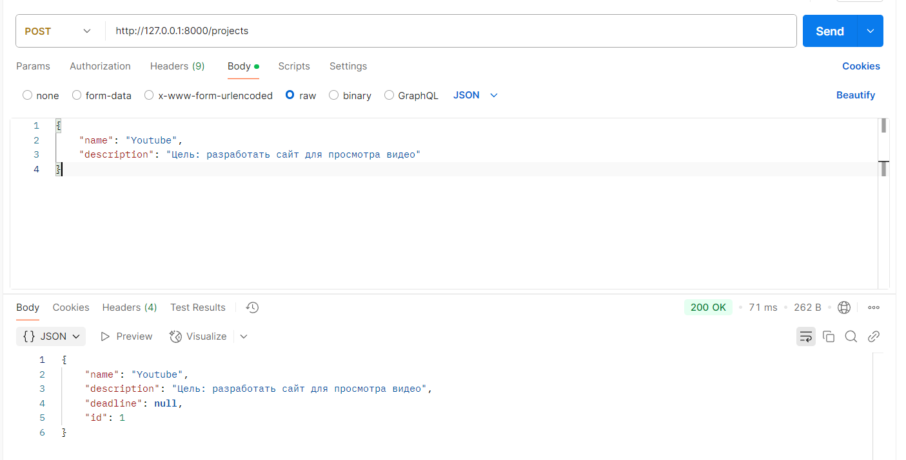
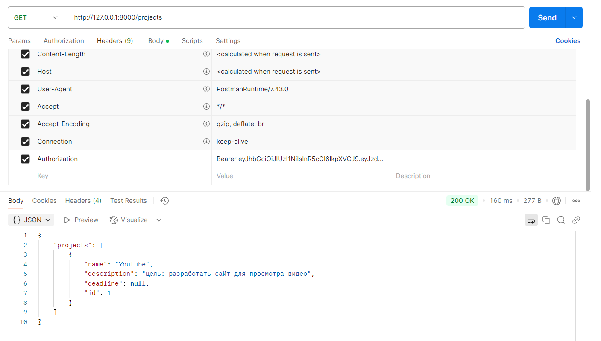
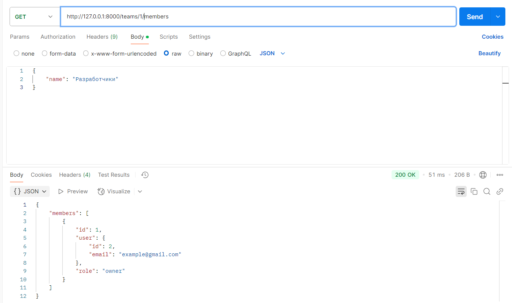

Лабораторная работа 1. Реализация серверного приложения FastAPI
Ссылка
В качестве темы была выбрана разработка платформы для поиска людей в команду.
Авторизация и аутентификация
Для авторизации и аутентификации пользователей в данной системе используются jwt токены, сгенерированные
с помощью библиотеки PyJWT. При регистрации пользователь указывает свой email и пароль, который будет захеширован
при помощи алгоритма sha256 для того, чтобы при утечке данных из БД нельзя было его воспроизвести. В ответе клиент получит
jwt токен, который будет указывать в заголовке Authorization при обращении на другие эндпоинты.
...
async def sign_up(self, dto: UserCreateDTO) -> UserTokenDTO:
stmt = exists().where(User.email == dto.email).select()
is_exists = (await self._session.execute(stmt)).scalar()
if is_exists:
raise HTTPException(
status_code=status.HTTP_409_CONFLICT,
detail="Email occupied by another user",
)
new_user = User(
email=dto.email,
password=self._hash_password(dto.password),
)
self._session.add(new_user)
await self._session.commit()
await self._session.refresh(new_user)
return UserTokenDTO(
token=self._issue_token(new_user),
user=UserDTO.model_validate(new_user),
)
...
Метод sign_up принимает в себя объект DTO, проверяет что указанный email еще не занят, создает объект модели пользователя, сохраняет ее в БД, генерирует jwt токен и возвращает ответ в виде объекта UserTokenDTO
Так как токен имеет ограниченное время жизни периодически клиенту необходимо заново авторизовываться
через эндпоинт /sign-in
...
async def sign_in(self, dto: UserCreateDTO) -> UserTokenDTO:
stmt = select(User).where(User.email == dto.email)
user = (await self._session.execute(stmt)).scalar()
if (user is None) or (self._hash_password(dto.password) != user.password):
raise HTTPException(
status_code=status.HTTP_401_UNAUTHORIZED,
detail="Invalid email or password",
)
return UserTokenDTO(
token=self._issue_token(user),
user=UserDTO.model_validate(user),
)
...
Для проверки корректности введенного пароля мы должны его захешировать и сравнить с тем, что лежит в нашей базе данных
Работа с профилями
После регистрации пользователю становится доступна опция создания профиля, в котором он может указать информацию о себе, своих навыках, опыте работы и предпочтениях по проектам:
...
async def create_profile(self, me: UserDTO, dto: ProfileCreateDTO) -> ProfileDTO:
stmt = exists().where(Profile.user_id == me.id).select()
is_exists = (await self._session.execute(stmt)).scalar()
if is_exists:
raise HTTPException(
status_code=status.HTTP_409_CONFLICT,
detail="Profile has already been created",
)
new_profile = Profile(**dto.model_dump(), user_id=me.id)
self._session.add(new_profile)
await self._session.commit()
await self._session.refresh(new_profile)
return ProfileDTO.model_validate(new_profile)
...

Также имеется возможность обновить инофрмацию профили частично при помощи HTTP метода PATCH:
async def update_profile(self, me: UserDTO, dto: ProfileUpdateDTO) -> ProfileDTO:
stmt = select(Profile).where(Profile.user_id == me.id)
profile = (await self._session.execute(stmt)).scalar()
if profile is None:
raise HTTPException(
status_code=status.HTTP_404_NOT_FOUND,
detail="Profile not found",
)
dict_dto = dto.model_dump(exclude_unset=True)
for key, value in dict_dto.items():
setattr(profile, key, value)
self._session.add(profile)
await self._session.commit()
await self._session.refresh(profile)
return ProfileDTO.model_validate(profile)

Доступна опция поиска профилей по навыкам, опыту и интересам:
async def search_profiles(self, dto: CriteriaDTO) -> ProfileListDTO:
search_list = []
if dto.work_experience:
search_list.append(Profile.work_experience >= dto.work_experience)
if dto.skills:
search_list.append(
select(ProfileSkill)
.join(Skill, ProfileSkill.skill_id == Skill.id)
.where(
Skill.name.in_(dto.skills),
ProfileSkill.profile_id == Profile.id,
)
.exists()
)
if dto.interests:
search_list.append(
or_(
*[
Profile.about_me.like(f"%{interest}%")
for interest in dto.interests
]
)
)
stmt = select(Profile).where(*search_list)
profiles = (await self._session.execute(stmt)).scalars().all()
return ProfileListDTO(
total=len(profiles),
profiles=[ProfileDTO.model_validate(profile) for profile in profiles],
)

В любой момент пользователь может получить информацию о своем профиле через GET /me:
async def get_my_profile(self, me: UserDTO) -> ProfileDTO:
stmt = (
select(Profile)
.where(Profile.user_id == me.id)
.options(
selectinload(Profile.skills),
joinedload(Profile.user),
)
)
profile = (await self._session.execute(stmt)).scalar()
if profile is None:
raise HTTPException(
status_code=status.HTTP_404_NOT_FOUND,
detail="Profile not found",
)
return ProfileDTO.model_validate(profile)

Работа с проектами
Пользователь может создать проект и стать его владельцем (owner):
async def create_project(self, me: UserDTO, dto: ProjectCreateDTO) -> ProjectDTO:
project = Project(**dto.model_dump(), owner_id=me.id)
self._session.add(project)
await self._session.commit()
await self._session.refresh(project)
return ProjectDTO.model_validate(project)

Пользователь может получить проекты, к которым он имеет доступ (является членом команды, имеющей доступ к проекту)
через GET /profiles
async def get_allowed_projects(
self, me: UserDTO, limit: int, offset: Optional[int] = None
) -> list[ProjectDTO]:
stmt = (
select(Project)
.join(Workflow, Workflow.project_id == Project.id)
.where(
Workflow.team_id.in_(
select(Member.team_id).where(Member.user_id == me.id).subquery()
)
)
.limit(limit)
.offset(offset or 0)
)
projects = (await self._session.execute(stmt)).scalars().unique()
return [ProjectDTO.model_validate(project) for project in projects]

Работа с командами
Если пользователь является членом команды он может посмотреть всех ее участников через
эндпоинт GET /teams/{team_id}/members
